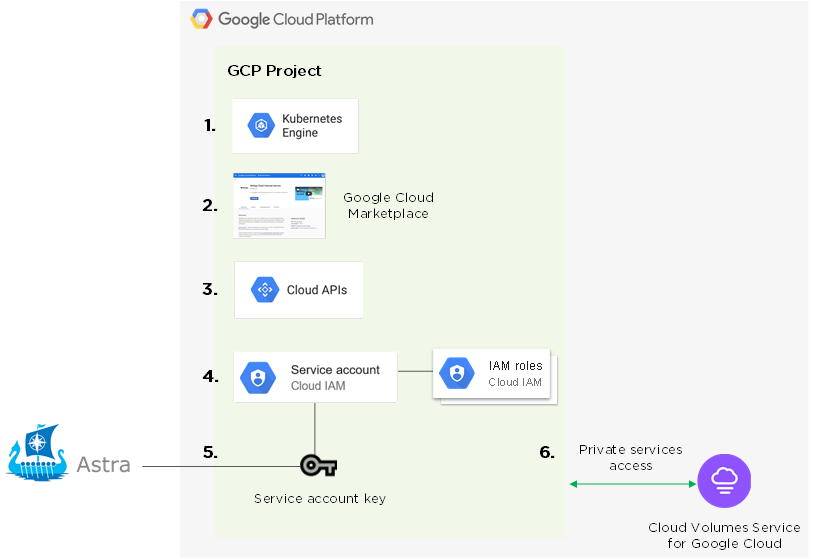
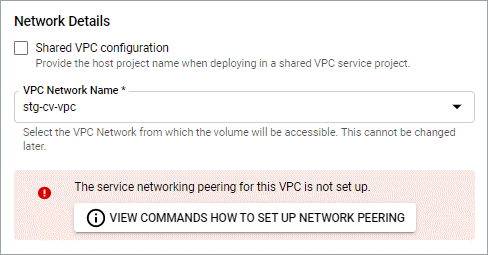

Set up Google Cloud
A few steps are required to prepare your Google Cloud project before you can manage Google Kubernetes Engine clusters with Astra Control Service.
Quick start for setting up Google Cloud
Get started quickly by following these steps or scroll down to the remaining sections for full details.
 Review Astra Control Service requirements for Google Kubernetes Engine
Review Astra Control Service requirements for Google Kubernetes Engine
Ensure that clusters are healthy and running a Kubernetes version in the range of 1.17 to 1.20, that worker nodes are online and running Container-Optimized OS or Ubuntu, and more. Learn more about this step.
 Purchase Cloud Volumes Service for Google Cloud
Purchase Cloud Volumes Service for Google Cloud
Go to the NetApp Cloud Volumes Service page in the Google Cloud Marketplace and click Purchase. Learn more about this step.
 Enable APIs in your Google Cloud project
Enable APIs in your Google Cloud project
Enable the following Google Cloud APIs:
-
Google Kubernetes Engine
-
Cloud Storage
-
Cloud Storage JSON API
-
Service Usage
-
Cloud Resource Manager API
-
NetApp Cloud Volumes Service
-
Service Consumer Management API
-
Service Networking API
-
Service Management API
 Create a service account that has the required permissions
Create a service account that has the required permissions
Create a Google Cloud service account that has the following permissions:
-
Kubernetes Engine Admin
-
NetApp Cloud Volumes Admin
-
Storage Admin
-
Service Usage Viewer
-
Compute Network Viewer
 Create a service account key
Create a service account key
Create a key for the service account and save the key file in a secure location. Follow step-by-step instructions.
 Set up network peering for your VPC
Set up network peering for your VPC
Set up network peering from your VPC to Cloud Volumes Service for Google Cloud. Follow step-by-step instructions.
The following image depicts each of these steps that you’ll need to complete.

GKE cluster requirements
A Kubernetes cluster must meet the following requirements so you can discover and manage it from Astra Control Service.
- Kubernetes version
-
A cluster must be running a Kubernetes version in the range of 1.17 to 1.20.
- Image type
-
The image type for each worker node must be Container-Optimized OS or Ubuntu.
- Cluster state
-
Clusters must be running in a healthy state and have at least one online worker node with no worker nodes in a failed state.
- Google Cloud region
-
Clusters must be running in a Google Cloud region where Cloud Volumes Service for Google Cloud is supported. Note that Astra Control Service supports both service types: CVS and CVS-Performance.
- Networking
-
The cluster must reside in a VPC that is peered with Cloud Volumes Service for Google Cloud. This step is described below.
- Private clusters
-
If the cluster is private, the authorized networks must allow the Astra Control Service IP addresses:
-
54.164.233.140/32
-
3.218.120.204/32
-
34.193.99.138/32
-
- Mode of operation for a GKE cluster
-
You should use the Standard mode of operation. The Autopilot mode hasn’t been tested at this time. Learn more about modes of operation.
Purchase Cloud Volumes Service for Google Cloud
Astra Control Service uses Cloud Volumes Service for Google Cloud as the backend storage for your persistent volumes. You need to purchase Cloud Volumes Service for Google Cloud from the Google Cloud Marketplace to enable billing for persistent volumes.
-
Go to the NetApp Cloud Volumes Service page in the Google Cloud Marketplace, click Purchase, and follow the prompts.
Enable APIs in your project
Your project needs permissions to access specific Google Cloud APIs. APIs are used to interact with Google Cloud resources, such as Google Kubernetes Engine (GKE) clusters and NetApp Cloud Volumes Service storage.
-
Use the Google Cloud console or gcloud CLI to enable the following APIs:
-
Google Kubernetes Engine
-
Cloud Storage
-
Cloud Storage JSON API
-
Service Usage
-
Cloud Resource Manager API
-
NetApp Cloud Volumes Service
-
Service Consumer Management API
-
Service Networking API
-
Service Management API
-
The following video shows how to enable the APIs from the Google Cloud console.
Create a service account
Astra Control Service uses a Google Cloud service account to facilitate Kubernetes application data management on your behalf.
-
Go to Google Cloud and create a service account by using the console, gcloud command, or another preferred method.
-
Grant the service account the following roles:
-
Kubernetes Engine Admin - Used to list clusters and create admin access to manage apps.
-
NetApp Cloud Volumes Admin - Used to manage persistent storage for apps.
-
Storage Admin - Used to manage buckets and objects for backups of apps.
-
Service Usage Viewer - Used to check if the required Cloud Volumes Service for Google Cloud APIs are enabled.
-
Compute Network Viewer - Used to check if the Kubernetes VPC is allowed to reach Cloud Volumes Service for Google Cloud.
-
If you’d like to use gcloud, you can follow steps from within the Astra Control interface. Click Account > Credentials > Add Credentials, and then click Instructions.
If you’d like to use the Google Cloud console, the following video shows how to create the service account from the console.
Configure the service account for a shared VPC
To manage GKE clusters that reside in one project, but use a VPC from a different project (a shared VPC), then you need to specify the Astra service account as a member of the host project with the Compute Network Viewer role.
-
From the Google Cloud console, go to IAM & Admin and select Service Accounts.
-
Find the Astra service account that has the required permissions and then copy the email address.
-
Go to your host project and then select IAM & Admin > IAM.
-
Click Add and add an entry for the service account.
-
New members: Enter the email address for the service account.
-
Role: Select Compute Network Viewer.
-
Click Save.
-
Adding a GKE cluster using a shared VPC will fully work with Astra.
Create a service account key
Instead of providing a user name and password to Astra Control Service, you’ll provide a service account key when you add your first cluster. Astra Control Service uses the service account key to establish the identity of the service account that you just set up.
The service account key is plaintext stored in the JavaScript Object Notation (JSON) format. It contains information about the GCP resources that you have permission to access.
You can only view or download the JSON file when you create the key. However, you can create a new key at any time.
-
Go to Google Cloud and create a service account key by using the console, gcloud command, or another preferred method.
-
When prompted, save the service account key file in a secure location.
The following video shows how to create the service account key from the Google Cloud console.
Set up network peering for your VPC
The final step is to set up networking peering from your VPC to Cloud Volumes Service for Google Cloud.
The easiest way to set up network peering is by obtaining the gcloud commands directly from Cloud Volumes Service. The commands are available from Cloud Volumes Service when creating a new file system.
-
Go to NetApp Cloud Central’s Global Regions Maps and identify the service type that you’ll be using in the Google Cloud region where your cluster resides.
Cloud Volumes Service provides two service types: CVS and CVS-Performance. Learn more about these service types.
-
On the Volumes page, click Create.
-
Under Service Type, select either CVS or CVS-Performance.
You need to choose the correct service type for your Google Cloud region. This is the service type that you identified in step 1. After you select a service type, the list of regions on the page updates with the regions where that service type is supported.
After this step, you’ll only need to enter your networking information to obtain the commands.
-
Under Region, select your region and zone.
-
Under Network Details, select your VPC.
If you haven’t set up network peering, you’ll see the following notification:

-
Click the button to view the network peering set up commands.
-
Copy the commands and run them in Cloud Shell.
For more details about using these commands, refer to the Quickstart for Cloud Volumes Service for GCP.
-
After you’re done, you can click cancel on the Create File System page.
We started creating this volume only to get the commands for network peering.
 Edit on GitHub
Edit on GitHub